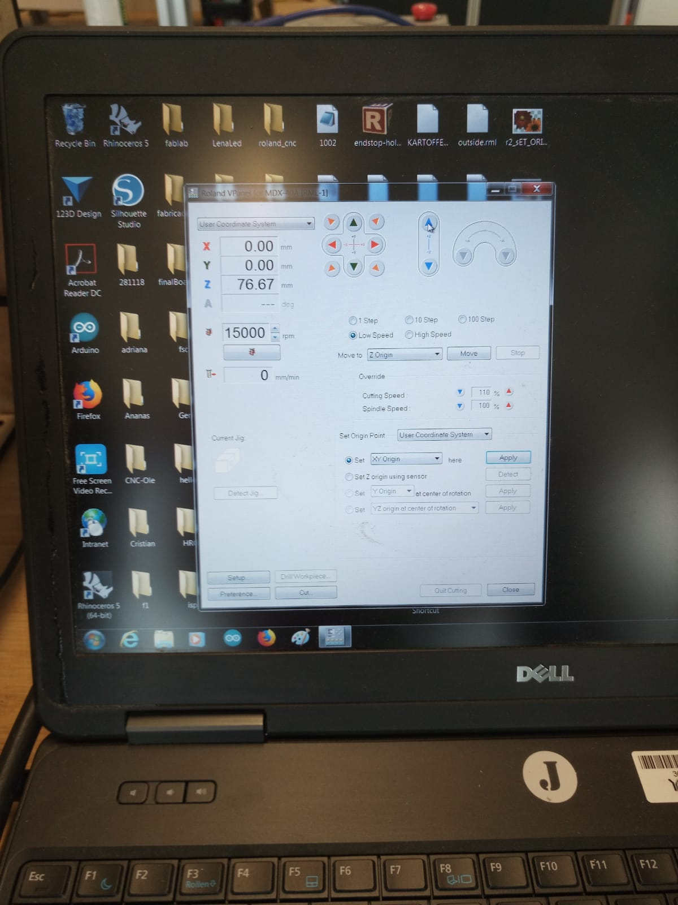
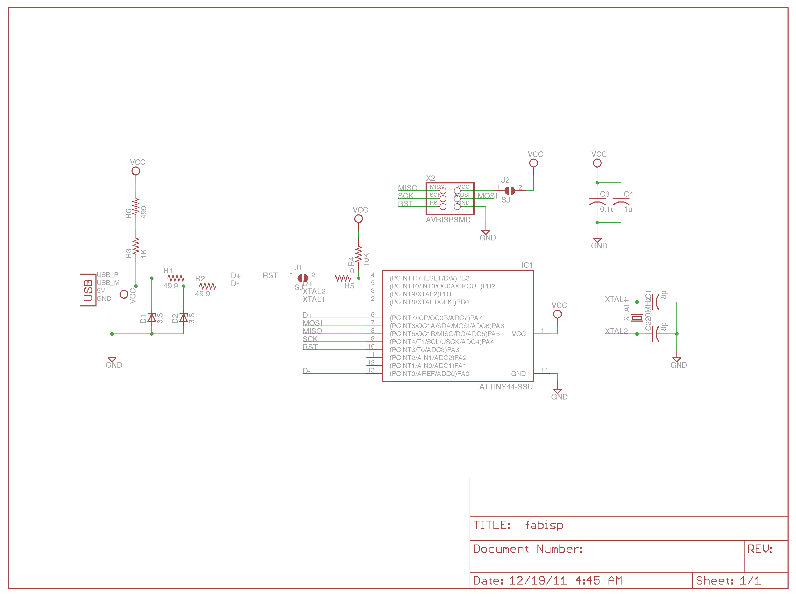

For my FABISP I am using the following Components

This weeks assignment was about building our own IPS COntroller. IPS=In-depth System
I wanted to use Andy's image from the archive of the FabAcademy, which he builds on a conductive plate by milling the parts which should be isolated

|
|
The file our machine can read is a .gcode
I am using the site fabmodules.org to generate the g.code by uploading the file and determining the specific instructions of our machine and how it should be milled
| First insert the png Our machine is the Roland mill which uses the file format .rml And select PCB traces (1/64) |
I set the following instructions:machine output - MDX-40speed in mm/s - 4 zjog - 5mm cut depth - 0.0 tool diameter - 0.2mm number of offsets - -1 |
Same for the outter layerBut the cut depth is 0.1mmtool diameter 0.4mm number of offsets - 4 offset overlap - 50% |
|
I plugged in the USB device and drop the file on the computer of the machine. |
 | Now I can set my starting point |
| To determine the Z-Axis I need to make sure, that the tool diamter slightly touches the conductive plate. I used a multimeter to get an audio signal when both touches. | When the instructions are done, insert the file into the programm and press CUT |

For my FABISP I am using the following Components |
 | |
This is how my finished ISP looks like |